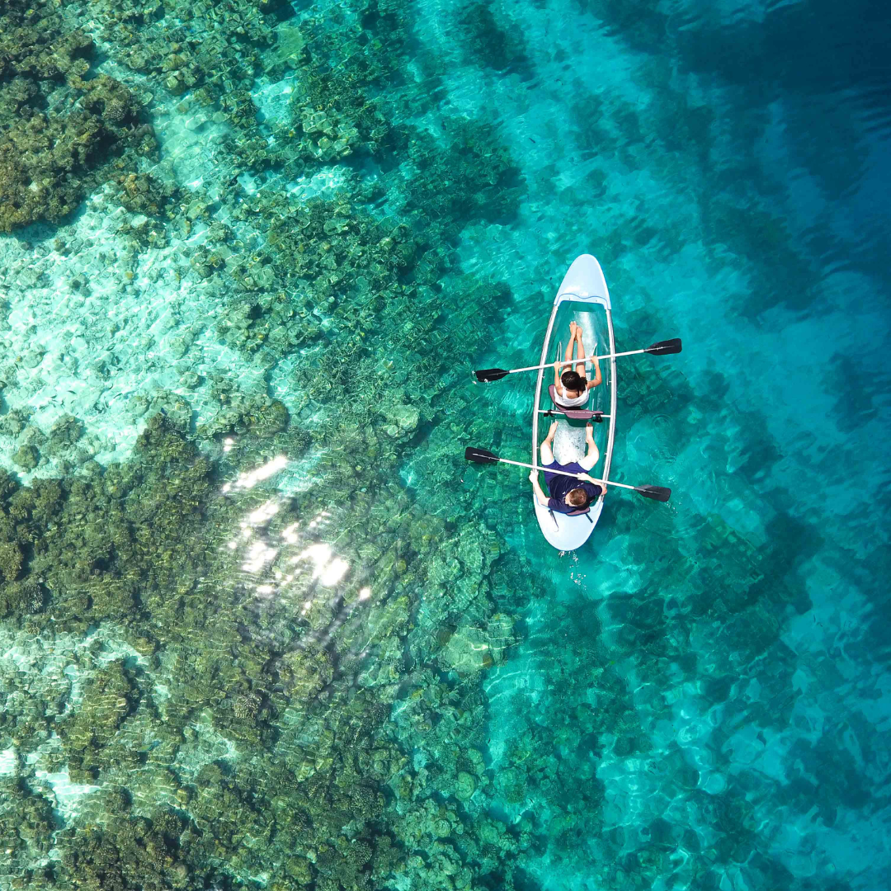
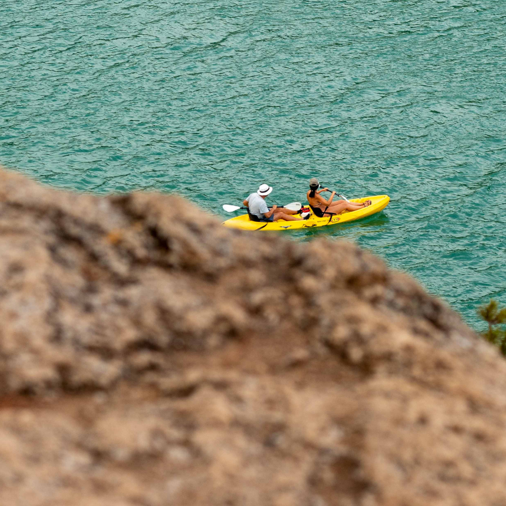

Kayaking Blog
My First Trip to Blue Heart Springs
It was a sunny Saturday when we packed up our kayaks and headed out to Buhl. The water was crystal clear, and the springs were even more magical in person. We paddled slowly, taking in the beauty of nature and enjoying each other's company. For any beginner, this is a must-try adventure in Idaho!
Top 5 Kayaking Tips for Beginners
If you’re new to kayaking, start small. Calm water, the right paddle size, and wearing your life jacket properly are just the beginning. Here are five easy tips to make your trip smoother and more enjoyable.